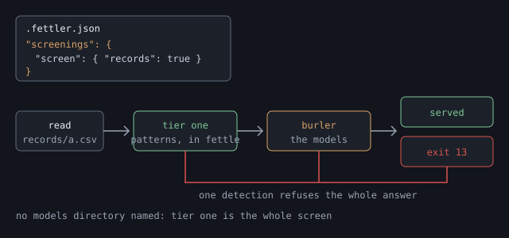

Shoddy · Fettler
The third level. Stop a regulated document leaving a tree by accident. The first tier needs nothing installed and one line of configuration.
This page describes the screenings level, which is off until a configuration file has a screenings section. With it on, Fettler checks what a read or a search is about to send back. If the answer holds regulated data, such as a patient's record number, Fettler refuses the whole answer. Most projects never turn this level on, and you can turn it on with or without guardrails.
There are four screens, and you name each one by a single word. The first runs inside fettle with nothing installed. The other three run a model you fetch, through burler, a second program that comes in its own archive.
| Screen | What it catches | What does the checking |
|---|---|---|
identifiers | Social security numbers, valid card numbers, formatted phone numbers, email addresses, labelled record numbers and labelled dates of birth | Six patterns inside fettle. Nothing to install, and no model. |
clinical | Patient names, dates and record numbers in clinical text, which no pattern finds | A de-identification model from the BioBERT or ClinicalBERT family, run by burler |
legal | Contract clauses and consumer-report content | A contract-clause model trained on CUAD, or LegalBERT, run by burler |
scientific | Named entities in research and scientific data | A SciBERT model trained to find entities, run by burler |
No model ships with Fettler, and none is downloaded for you. Choose the models says what to look for and what each licence allows.
Here is the path one read takes with the screen on. The patterns run first and the models second. One detection by either refuses the whole answer, and a clean answer is served as it would be at any other level.

Turning it on is two steps, and two commands confirm them.
# 1. decide whether you need it at all <- most trees do not
# 2. add a "screenings" section to .fettler.json <- works on the next call
fettle roots # confirm what is screened
fettle read one-of-the-records.pdf # confirm it refusesFor most people who want the screen, those two steps are all of it. Names, addresses, conditions and free text need a model, which is a second program and a download you fetch yourself. The models, in the second half of this page, covers that part. Nothing in the first half depends on it.
Turn it on when a tree holds records about people, and a person outside your team could read the transcript. Fettler reads PDF, Word and Excel files, which are the formats regulated data lives in. What it returns goes into the assistant's context, then into a transcript, a log, and wherever those are sent. The screen sits between the file and that chain.
| Your tree holds | Turn it on? |
|---|---|
| Patient notes, discharge summaries, lab results | Yes. This is the case the screen was built for. |
| Customer records with names, addresses, card or account numbers | Yes, with identifiers at least, which catches the card numbers. The names and addresses need a model. See the categories. |
| Signed contracts, credit files, student records | Probably. Read what it does not do first, because two of those three kinds of record are not covered categories. |
| Source code, build scripts, documentation | No. The email-address detector alone will refuse a great deal of it. See the note below. |
| Anonymised or made-up data | No. If it sits inside a screened tree, give its folder a screen of false. Carving out a folder shows how. |
Note Do not screen a source tree to see what happens. One of the patterns matches any email address, and source trees hold many of them, in comments, test files and package details. Every read that touches one will refuse. That is the detector working correctly, in a tree nobody meant to screen.
The screen judges the two verbs that hand content back, read and search. No other verb returns file content, so no other verb is screened. find returns paths, roots returns your own configuration, and extract writes files inside the tree rather than sending them out.
The screen judges what is being sent, not the whole file. A document may hold a patient's details on page 40. If you read page 2 and it discloses nothing, page 2 is sent. Judging the whole file would lock every useful tree, and people would turn the screen off to get out of that.
A search is judged one file at a time. The screen sees the matched lines plus whatever context you asked for, which is exactly what you would have seen.
The first tier needs nothing installed, and it works on the next call. Add a screenings section with a screen entry that names the tree holding the records:
{
"guardrails": {
"trees": {
"work": { "path": "." },
"records": { "path": "../records", "can": ["list", "read"] }
}
},
"screenings": {
"screen": { "records": ["identifiers", "clinical"] }
}
}Each key in screen is a tree name, or a tree name, a slash and a scope. A scope is a folder inside a tree that the guardrails section declares. The name must be a declared tree or scope, or else the file is refused. With guardrails off, the only tree is work, the launch folder, so "screen": { "work": true } is the one key you can write.
There are four ways to write a value, and one mixed form that is refused:
| You write | It screens |
|---|---|
true | All four categories. Forgetting to name one cannot happen this way. |
["identifiers", "clinical"] | Only those two. A list of plain words includes what it names. |
["-scientific"] | Everything except scientific. A list of words that start with a minus sign excludes what it names. |
false | Nothing. A tree that no key names gets this too. |
["identifiers", "-scientific"] | Refused when the file is read. It could mean identifiers only, or everything but scientific, and those differ by two whole categories. fettle does not guess which you meant. |
A misspelt category is refused too. If "lgal" were accepted, it would quietly remove a screen, and you would not find out until data left a tree you believed was covered.
Note Three words that name a regulation are refused, and the message says what to write instead. phi, pii and sci each promise coverage that arrives only once a model is installed. They are refused rather than translated, because a translation would keep them alive in configurations for good.
| Refused | Write instead |
|---|---|
phi | identifiers for the labelled patterns, and clinical for model screening of clinical text |
pii | identifiers |
sci | scientific |
A screen written inside a tree entry is refused. In the last release a screen sat inside the tree it screened. Now it lives only in the screenings section, so you can see whether a project screens anything by reading one place. The refusal shows where it goes, as {"screenings":{"screen":{"records":true}}}. A file written entirely in the old flat shape is refused too, and the message holds its entries rewritten under the three sections, ready to paste.
| Word | Concern | What does the checking |
|---|---|---|
identifiers | Identifiers with a fixed shape, whoever they belong to | Six patterns that run inside fettle. It is the only category that works with nothing installed, and it never uses a model. |
clinical | Clinical text, which United States health privacy law (HIPAA) covers | A model you install, and nothing until you do. Look for a de-identification model from the BioBERT or ClinicalBERT family. |
legal | Contract and consumer-report content | A model you install, and nothing until you do. Look for a contract-clause model trained on CUAD, or LegalBERT. |
scientific | Research and scientific data | A model you install, and nothing until you do. Look for a SciBERT model trained to find entities. |
clinical, legal or scientific with no models directory is screened in name only, and roots says so.These patterns run inside fettle itself, with no model, no second program and no download.
| Detector | It matches |
|---|---|
ssn | A United States social security number, written with hyphens, in a range that is actually issued. |
credit-card | 13 to 19 digits, written in groups the way cards are printed, that pass the card number's check digit. |
phone | A phone number that starts with a plus sign, or one written in separated groups. |
email | An email address, written in the usual form of a name, an at sign and a domain. |
medical-record-number | An identifier that comes after its own label, such as MRN, patient id or medical record no. |
date-of-birth | A date that comes after its own label, such as DOB, date of birth or born on. |
All six belong to one category, identifiers. Each one is an identifier with a shape somebody fixed, or a label announcing it. None of them reads clinical language, so a refusal from any of them reports as identifiers.
The patterns are narrow on purpose, and two of them depend on a label. No two hospitals agree on the shape of a record number, so the reliable thing to match is the label in front of it. Matching any number of the right length would refuse every part number in every spreadsheet, and a check that refuses too often is a check somebody turns off. So nine digits with no hyphens do not match as a social security number, because they are an order number far more often.
A scope's screen replaces the tree's screen, in the same way its can list does. That is what lets one folder take the screen away. Declare the folder as a scope under guardrails, then give it its own key:
{
"guardrails": {
"trees": {
"records": {
"path": "../records",
"can": ["list", "read"],
"scopes": {
"anonymised": { "can": ["list", "read"] },
"exports": { "can": ["list", "read"] }
}
}
}
},
"screenings": {
"screen": {
"records": true,
"records/anonymised": false,
"records/exports": ["identifiers"]
}
}
}fettle setup screenings <client> [--local] [--dry-run]setup screenings checks what the screen needs, and writes a starter section if the file has none. It checks that burler is in the same folder as fettle. It checks the models directory, if the file names one. Then, at --local, it writes a starter screenings section that screens the default tree for every category.
$ fettle setup screenings claude-code --local
create, with a "screenings" section: C:\github\app\.fettler.json
screening the tree 'work' for every category
burler is beside fettle at C:\tools\fettle\burler.exe
no models directory is named, so only identifiers are screened. Name one as "models" under "screenings"Edit the starter section before you rely on it. It screens the default tree, which is often a source tree, and a source tree is the case the note above warns about. Change the key to the tree or scope that holds the records. Setup never changes a screenings section that already exists. At --global it writes no project file, and it tells you to run it with --local in each project that wants screenings.
Ask for the roots first. On the left is a whole file that screens a records tree and carves out one folder. On the right is what roots says with it in place.
// C:\github\app\.fettler.json
{
"guardrails": {
"trees": {
"work": { "path": "." },
"records": {
"path": "../records",
"can": ["list", "read"],
"scopes": {
"anonymised": {
"can": ["list", "read"]
}
}
}
}
},
"screenings": {
"screen": {
"records": ["identifiers",
"clinical"],
"records/anonymised": false
}
}
}$ fettle roots
levels
tools on, always
guardrails on, from C:\github\app\.fettler.json
screenings on, from C:\github\app\.fettler.json
trees
work C:\github\app (default)
can: list read create update rename delete
branch: main (local)
records C:\github\records
can: list read
anonymised can: list read
screens
records identifiers clinical
records/anonymised nothing
no "models" directory is declared, so the clinical, legal, scientific categories screen nothing. Only identifiers are screened
found by fettle
scratch C:\Users\you\AppData\Local\Temp\claude\...\scratchpad
...
declared by C:\github\app\.fettler.jsonThe screens heading lists every tree and scope that a key names. A scope with no line of its own is inheriting the tree's screen. The heading appears only when something is screened or a models directory is named.
clinical, but a model judges clinical, and none is installed yet. So right now it screens nothing, and roots says so. Once you install a model, roots names it instead, as naming the directory shows.Now read a file you know holds an identifier:
$ fettle read records:ward-round.docx
refused: this response would disclose regulated data: 2 in identifiers. The matches are
not quoted, because the refusal would then disclose them. Read a narrower range, or
take the screen off this scope if the content is not regulated.
$ echo $LASTEXITCODE
13The refusal gives a category and a count, and never the text itself. A refusal that named what it found would write it into the log and the transcript, which is the harm the screen exists to prevent. Every screening refusal exits with 13, the outcome screened.
The two findings are the labelled MRN: line and the labelled DOB: line. That is why the count is two and the category is identifiers. Nothing read the clinical text around them, because no model is installed.
clinical, legal and scientific ever screen anything.A correct configuration and a screen that holds are two different claims, and only the second one matters. Ask the assistant to do each of these, and watch what comes back.
| Ask the assistant to… | What a working screen does |
|---|---|
| ask for the roots | The screenings line says on. The screens heading names your categories, and your carved-out scope shows nothing. |
| read a file holding a social security number or a card number | Refused, exit 13, with a count in identifiers and never the number. |
read a file with a date of birth after its own label, such as DOB: | Refused, with a count in identifiers. |
| read the same file from the carved-out scope | Served, because a scope's screen replaces the tree's. |
| search the tree for a common word that appears near an identifier | Refused, because the matched lines and their context are what would have been sent. |
| read an image in a screened scope | Refused, because nothing here reads pictures, and a photographed record is the case this exists for. |
| read an ordinary file with no identifiers in it | The file is served. If this one refuses, the screen is on a tree it does not belong on. |
Every refusal names its own cause in its first few words. They say whether something was found, or whether the screen could not run. Those are two different problems with two different fixes.
| It says | Do this |
|---|---|
this response would disclose regulated data: | The screen worked. Read a narrower range, or take the screen off that scope if the content is not regulated. The count says how many it found, and the category says which kind. |
this response could not be screened, so it is not served: | The screen broke. One of the rows below follows. Nothing was checked, so nothing is served. |
… burler, the screening sidecar, is not installed | burler is not in the same folder as fettle, and the message says where it looked. Redo the burler install, or take the screen off that tree. |
… would not start: | The file is there and will not start. Usually it is the wrong platform's archive, or the file has no permission to run. On macOS, check the quarantine mark. |
… refused: and then burler's own words | burler declined and said why: a category with no folder, a model that would not load, or a manifest with a missing field. Drive it by hand to see the whole message. |
… did not answer within 30 seconds | burler is running and stuck. fettle stops it, so the next read starts a fresh one. A very large payload on a slow machine can cause this. |
… failed: and then it said: | burler started and then stopped, and its last words are quoted. Those words are usually the real answer. |
… answered something that is not JSON, or a similar line | The two programs did not understand each other. Almost always that means a fettle and a burler from different releases, so unpack matching versions. |
this scope is screened, and the screen cannot read an image | This is expected, because nothing here reads pictures. Move the image to a scope with no screen if it holds nothing regulated. |
When it refuses, on the reference page, lists every message the screen can produce.
Sending content because the check broke is the one outcome this must never produce. A burler that will not start, a model that will not load, an answer nobody can read and a check that ran out of time all refuse, and each says which. A fault nobody planned for becomes a refusal too. That looks like an outage, and it is the intended trade, because a screen that quietly stopped screening would be worse.
| When | What happens |
|---|---|
| Every screened read | The patterns run inside fettle. Each one has a limit of one second, and in practice they take too little time to measure. |
| The first screened read after a quiet spell | burler starts and loads a model, which takes a few seconds. fettle allows up to 90 seconds for this, because a timeout would refuse an answer that was going to be served. |
| Every read after that | Tens of milliseconds, because burler stays running. After 30 seconds with no answer, something is wrong rather than slow. |
| Five minutes with nothing to screen | burler is stopped and its memory released. A tool open in an editor all day should not hold hundreds of megabytes for one document. |
| The same content twice | Answered from memory. The last 256 verdicts are kept, matched on the content and on the manifests of the models that judged it. |
identifiers loads none and never starts burler.What it stops is the ordinary accident: a regulated document read into a transcript by an assistant that was only trying to help. It is not built to stop a person who is trying to get the data out.
| It does not | Because |
|---|---|
| Cover credit reports or student records as such | Those records are mostly identifiers with a fixed shape, and identifiers catches those. That is all it does. Nothing here makes a project meet the laws that cover those records. |
| Offer a sensitivity setting | Any detection refuses. A setting would get turned down until the check was off. |
| Read images | Nothing here reads pictures, so an image in a screened scope is refused rather than sent unchecked. |
| Hide or blank out parts of an answer | It refuses the whole answer. A document with holes in it would look like a safe copy of the original, and it would not be one. |
| Screen what you write into a tree | That is the credential check, which judges what a write adds. When it refuses covers it. |
| Stop anything outside Fettler | A shell command, an allowed built-in reader, or a person with the file open reads it as normal. fettle doctor is what finds those routes. |
Note None of this second half is needed for the first tier. identifiers runs inside fettle with nothing installed. This half covers the other three categories, clinical, legal and scientific, and each of them needs a model.
A model here is a trained program that reads text and marks the words that name something. It might mark a person, a date or a record number. Three things make the second tier work: burler, the program that runs the models; the model files you fetch; and a models entry that says where those files are.
burler is a second program, in its own archive. In a woollen mill, the burler was the worker who picked the faults out of finished cloth before it left the mill. This program does the same job for answers leaving a tree. fettle talks to it over a pipe, and the two share no code.
It is separate because of what the models need. Running them needs ONNX Runtime, a library with separate native files for each operating system. fettle is built so that it stays one file you copy onto a machine, and those native files would break that. Folding the models in would also make every download pay for a feature most trees never use.
PATH. A program that decides what may leave your tree should not be one an environment variable can swap out.$dir = "$env:LOCALAPPDATA\Programs\fettle" # wherever fettle.exe already is
Expand-Archive burler-X.Y.Z-win-x64.zip -DestinationPath $dir -Force
Get-ChildItem $dir -Recurse | Unblock-File
Get-ChildItem $dir\burler.exe # it should be beside fettle.exetar -xzf burler-X.Y.Z-osx-arm64.tar.gz -C ~/.local/bin
xattr -d com.apple.quarantine ~/.local/bin/burler # macOS only
ls -l ~/.local/bin/burler # beside fettleburler is published for the same four platforms as fettle: win-x64, linux-x64, osx-x64 and osx-arm64. Take the one that matches the fettle you installed, because the two run as a pair on one machine.
Nothing happens yet, because burler with no models does nothing, and fettle does not start it until a models directory is named. Installing it early does no harm, and fettle setup screenings confirms where it is.
It needs a model that labels each word of a sentence. It is handed a piece of text and answers which words are a person, a date, an identifier, and so on. burler reads those labels, works out where each entity starts and stops, and reports how many it found.
A base model is not one of these, so check before you download. BioBERT and SciBERT are base models, which understand clinical or scientific language but have not been taught to label anything. What you need is a model that somebody has trained further on a labelling task, such as removing patient details from clinical notes. Look for a model card that names a task, not only a subject.
Any model in the BERT family works, as long as it labels words and can be exported to the ONNX format. Nothing here is tied to one model.
| Category | Family | What to look for |
|---|---|---|
clinical | BioBERT, ClinicalBERT | A model trained to find patient details. The i2b2 and n2c2 research datasets are the usual training data, and such models label names, dates and record numbers that no pattern here finds. |
scientific | SciBERT | A model trained to find entities in scientific text, rather than the base model. |
legal | A general model with an open licence, or LegalBERT | Contract-clause models trained on CUAD are the readiest. LegalBERT is stronger, and its licence has a condition, which the table below explains. |
There is no row for identifiers, and there cannot be. It is the pattern tier, so it takes no model and no folder. If you want names of people and places caught, that is a model under one of the three categories above.
Read the licence before you adopt a model. Some clinical models carry data-use terms that forbid passing them on, and a models folder you share with a colleague is passing them on. Two rules make the rest simple:
These were checked against the model cards and source repositories on 20 August 2026. Check again before you rely on them, because terms change, and this table is a starting point rather than legal advice.
| Model | What was found | What that means for you |
|---|---|---|
| BioBERT | Apache-2.0, in the licence file of dmis-lab/biobert on GitHub. The copies on model hosts carry no tag. | Usable. Record the GitHub repository as provenance, not the copy you downloaded. |
| SciBERT | Apache-2.0, on allenai/scibert, with the same untagged copies. | Usable, with the same provenance rule. |
| ClinicalBERT, and the i2b2 models trained to find patient details | Tagged MIT by the groups that held the agreements for the underlying data. | Usable on that grant. Record the revision as well as the source, because the grant covers what they published. |
| LegalBERT | CC-BY-SA-4.0, a licence that passes its own terms on to anything built from it. | Usable as your own add-on. Do not train a new model from it, because its terms would carry into whatever you build. |
| Anything with no licence anywhere | none | Do not adopt it, however good its scores are. |
burler runs models in the ONNX format, so you convert each model once. ONNX is a portable way of saving a trained model, so that programs other than the one that trained it can run it. Most published models are not in that format yet.
Hugging Face's optimum tool does the conversion in one command. The task name matters, because token-classification is the name for a model that labels each word.
pip install optimum[onnxruntime]
optimum-cli export onnx --model ORG/CHECKPOINT --task token-classification out/Shrinking the model afterwards is optional, and it pays. This step, called quantising, stores the model's numbers with less precision, typically 8 bits instead of 32. It cuts the file to about a quarter of its size and makes it several times faster, at a small cost in accuracy. optimum can do this too, and the sizes on this page assume you did.
Give each category its own folder, named for the category, under one parent folder:
screening-models/
clinical/
model.onnx
vocab.txt
labels.json
manifest.json
legal/
model.onnx
vocab.txt
labels.json
manifest.jsonOnly the categories you screen need a folder. A category that no screen names is never looked for, and identifiers never needs a folder.
| File | What it is |
|---|---|
model.onnx | The exported model. |
vocab.txt | The list of word pieces the model was trained on. Take the one from the same model, because a list from another model produces confident nonsense. |
labels.json | A JSON array of label names, one per class, in order. The position in the array is the class number. An object that maps numbers to names is refused, because a gap in the numbers means a broken export. |
manifest.json | What the model says about itself. It is required, and the next section describes it. |
A folder missing any of the first three files is refused by name, so you learn which file is absent.
The manifest has four fields, and each one must be a string that is not empty:
{
"checkpoint": "obi/deid_roberta_i2b2",
"revision": "a1b2c3d",
"licence": "MIT",
"provenance": "https://huggingface.co/obi/deid_roberta_i2b2"
}provenance is where you read the licence. That is often not where you downloaded the file, which is why the manifest records it.Name the models directory as models under screenings, in the personal overlay or the machine file. Where several hundred megabytes of models sit is a fact about one disk, not about the project. So keep it out of the checked-in file.
// .fettler.local.json - beside .fettler.json, kept out of source control
{
"screenings": {
"models": "C:/models/screening"
}
}screenings section adds the directory and keeps the screens the project file declares.With the directory named and a model in it, roots names the model that does the judging:
$ fettle roots
levels
tools on, always
guardrails on, from C:\github\app\.fettler.json
screenings on, from C:\github\app\.fettler.json and C:\github\app\.fettler.local.json
...
screens
records identifiers clinical
clinical: obi/deid_roberta_i2b2 @ a1b2c3d
records/anonymised nothing
models C:\models\screening
...
declared by C:\github\app\.fettler.json (with C:\github\app\.fettler.local.json)Each category line gives the model and its revision, read from the manifest. A category whose folder holds no model says no model installed; reads here are refused, which is the state to catch before a read does. The thing doing the judging is always named, never hidden behind the category word.
doctor reports the same facts in its screenings section, one line per category:
screenings on, from C:\github\app\.fettler.json and C:\github\app\.fettler.local.json
burler: C:\tools\fettle\burler.exe
models: C:\models\screening
clinical: obi/deid_roberta_i2b2 @ a1b2c3d
legal: no model installed
scientific: no model installedThat is why fettle does not check that the directory exists when it reads the file. A file opened on a machine without the models is not broken, and refusing the whole file would take the tree away rather than the screen. The refusal comes at the read instead, where it can name the category that wanted the model.
Then read something. The first screened read starts burler and loads a model, which takes a few seconds. Every read after that takes tens of milliseconds.
When you doubt the model tier, run burler yourself. It reads one request per line and answers with one line:
$ burler --models C:/models/screening
{"op":"screen","categories":["clinical"],"payload":"the weather was fine"}
{"ok":true,"findings":[]}Type the request line, press Enter, and read the answer.
| What comes back | What it tells you |
|---|---|
{"ok":true,"findings":[]} | Everything works. burler loaded the model, ran it, and found nothing in that sentence. |
{"ok":true,"findings":[{"category":"clinical","count":1,… | burler found something. Try a sentence with a name or a date in it to see this. |
{"ok":false,"error":"'clinical' is screened and there is no model for it…"} | The models directory has no clinical folder, and the message names the path it looked at. |
{"ok":false,"error":"the model at … would not load…"} | The file is there, and it is not a model burler can run. Usually the export went wrong, or the download did not finish. |
| Nothing at all, and it exits | Read the error output. Started with no --models, burler says it needs a directory naming where the models are, and exits with 2. |
An empty findings array means burler checked and found nothing. A missing one is a fault. The two are never written the same way, on either side of the pipe.
Give the category a folder of folders instead of one model:
screening-models/
legal/
cuad-clauses/ model.onnx, vocab.txt, labels.json, manifest.json
legalbert-ner/ model.onnx, vocab.txt, labels.json, manifest.jsonTheir findings add together. A detection by any of them refuses, so a second model can only make the screen stricter. That lets you run a model with an open licence alongside a stronger add-on, rather than choosing one.
burler decides which shape a category has by looking for model.onnx directly inside its folder. If the file is there, that is the one model. If not, burler loads every folder inside that holds one.
models may name a network share, and for a team that saves each person the download. Know what you are trusting when you do:
| You want | Page |
|---|---|
| To declare trees and scopes, which a screen can name | Guardrails |
Every exit code, including 13 | Exit codes |
| What Fettler defends against, and what it does not | The reference |